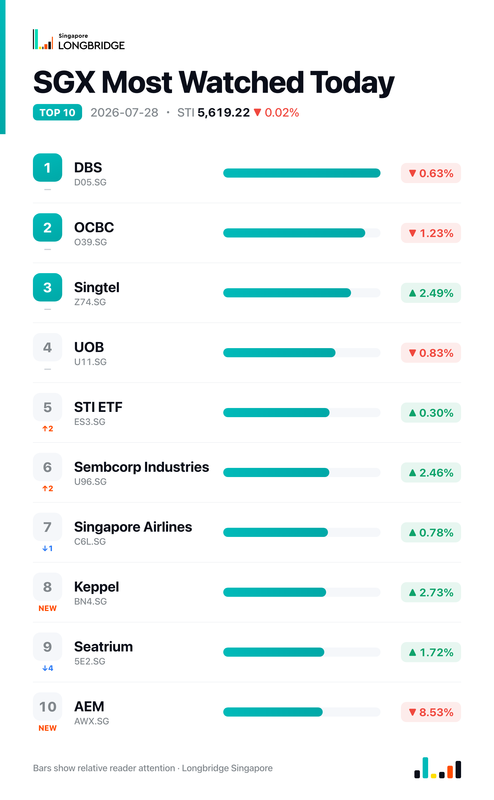

STI Ends Flat at 5,619.22 as Bank Pullback Offsets Broad-Based Gains
The Straits Times Index closed at 5,619.22 on Tuesday, down 1.02 points, or 0.02%, after swinging between 5,577.43 and 5,625.27 during the session. The move was marginal, but not because trading was quiet: 19 of the index's 30 constituents finished higher against nine decliners and two unchanged, a broad advance that was offset almost entirely by losses in the three local banks.
Tuesday's session looked more like a rotation than a retreat. DBS, OCBC and UOB — which carry the heaviest weighting on the index — all fell, ending a rebound that had lifted the trio for three straight sessions through Monday. That drag was large enough to hold the benchmark near flat even as gains broadened elsewhere, led by property trusts, industrials and telecoms, several of which advanced on company-specific news rather than any single market-wide catalyst.
Session Movers
CapitaLand Investment (9CI.SG, +3.98%) was Tuesday's best performer, extending its advance after completing the RMB 3.15 billion "CapitaLand Preferred" inter-institutional REIT on 24 July, an issuance backed by a Shanghai Xintiandi mixed-use project that the company said is the largest such foreign-institutional REIT to date, with 10 of its 11 investors participating for the first time. The stock has also stayed in focus over unconfirmed reports that its merger talks with Frasers Property have stalled over valuation and leadership differences. Consensus rating is Strong Buy, with a target implying about 30% upside.
Keppel (BN4.SG, +2.73%) advanced after a run of same-day disclosures: the group said it is divesting six legacy rigs to an Apollo-backed fund for about $1.2 billion, expecting $611 million in cash proceeds and an accounting loss of roughly $92 million, with as many as four more rigs earmarked for sale by 2028. Keppel also said its funds under management have topped S$100 billion, reaching its 2026 interim target early on roughly S$7.8 billion of fresh commitments from global limited partners this year. DBS reiterated a Buy on the stock the same day.
Singtel (Z74.SG, +2.49%) rose after Opensignal's July report named it Singapore's best mobile network, with the operator taking nine awards including leadership in reliability, 5G coverage and 5G upload speeds. DBS also maintained a Buy rating on the stock, with a S$5.46 target against a Strong Buy consensus. The stock goes ex-dividend on 31 July for a S$0.103-a-share payout due 19 August.
Yangzijiang Shipbuilding (BS6.SG, -1.51%) was among Tuesday's larger decliners even as the Chinese shipbuilding sector it operates in remains in an up-cycle: industry data cited this week showed new order volumes up 173.1% year-on-year in the first half, with the company's own order book already extending to 2030. There was no fresh stock-specific news to explain Tuesday's fall. The stock trades at 9.95 times earnings, cheaper than about 22% of its 10-year range, against a Buy consensus implying roughly 18% upside.

One point worth noting
Tuesday's breadth was wider than Monday's record-setting session — 19 advancers against nine decliners, versus 18-10 a day earlier — yet the index barely moved. The reason was concentration at the top: DBS, OCBC and UOB, the three heaviest weights on the benchmark, all fell together for the first time in four sessions, breaking a rebound that had lifted each of them for three straight days through Monday. It is a reminder that a broad advance and a flat index are not a contradiction when the constituents doing the falling are large enough to offset the rest.
This recap is for informational purposes only and does not constitute investment advice.